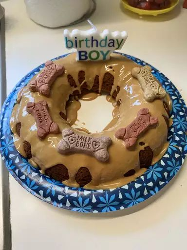

Doggie Birthday Cake

Description
This dog birthday cake is super fun to make. I made this for my dog, and she ate it all up. The honey is optional, but it makes the cake a sweeter treat for the dog. And yes, I tried some — it's pretty good.
Ingredients
- 1 egg
- 1/3 cup honey (optional)
- 1/4 cup peanut butter
- 1/4 cup cooking oil
- 1 teaspoon vanilla extract
- 1 cup shredded carrots
- 1 cup whole water or white floor
- 1 teaspoons baking soda
Steps
- Preheat the oven to 350 degrees F (175 degrees C). Grease a 6-cup ring mold or fluted tube pan.
- Combine egg, honey, peanut butter, oil, and vanilla in a large bowl; blend well. Stir in carrots until well-combined. Sift together flour and baking soda and fold into carrot mixture. Spoon cake batter into the prepared pan.
- Bake in the preheated oven until a toothpick inserted in the center comes out clean, about 40 minutes. Let cake cool in the pan for 10 minutes, then turn out onto a wire rack to cool completely.
Go back